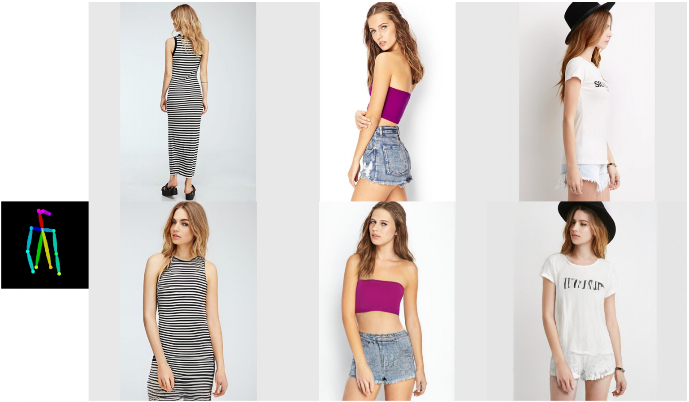

|
Jianmin Bao （鲍建敏）
Senior Researcher Microsoft Research Asia Email: jianbao AT microsoft dot com |
Biography
I am currently a senior researcher in Visual Computing Group at Microsoft Research Asia. Before that, I received my B.S. and Ph.D. degrees from University of Science and Technology of China (USTC) in 2014, 2019, supervised by Prof. Jiebo Luo and Prof. Houqiang Li. I collaborate closely with Dong Chen, Fang Wen, and Gang Hua during my internship in MSRA.
My research interests focus on deep generative models (e.g., GANs, VAEs, AR, and Diffusion models), large-scale self-supervised, vision-language pretraining, and general representation learning (e.g., fundamental network structure design). I have received the best paper nominee in CVPR 2021, I have a couple of papers(Uformer, CSWin Transformer, and SimMIM) that are among the PaperDigest Most Influential Papers. I serve the reviewer of many top conferences (including CVPR, ICCV, ECCV, AAAI, NeurIPs, ICML, ICLR and ACCV) and top journals (TPAMI, IJCV, TIP, TMM, TCSVT).
News
- 4 papers are accepted by CVPR'24 with 1 paper(MicroCinema) as highlight.
- Uni-ControlNet is accepted by NeurIPS 2023.
- 3 papers are accepted by ICCV'23.
- CVPR 2023 Outstanding Reviewer.
- X-Paste is accepted by ICML'23.
- 4 papers are accepted by CVPR'23 with 2 as highlights(2.5%).
- 2 papers are accepted by ECCV'22.
- 8 papers are accepted by CVPR'22.
- Code and models of CSWin Transformer are released. [github]
- 3 papers are accepted by ICCV'21.
- 3 papers are accepted by CVPR'21.
- Sep. 2, 2020: Our Face X-ray is applied for fighting disinformation ahead of 2020 US election.[News]
Publications
|
|
DIRE for Diffusion-Generated Image Detection
Zhendong Wang*, Jianmin Bao*, Wengang Zhou, Weilun Wang, Hezhen Hu, Hong Chen, and Houqiang Li.(* Equal Contribution) International Conference on Computer Vision (ICCV), 2023 [pdf] [code] |
|
|
Efficient Diffusion Training via Min-SNR Weighting Strategy
Tiankai Hang, Shuyang Gu, Chen Li, Jianmin Bao , Dong Chen, Han Hu, Xin Geng, Baining Guo. International Conference on Computer Vision (ICCV), 2023 [pdf] [code] |
|
|
Contrastive learning rivals masked image modeling in fine-tuning via feature distillation
Yixuan Wei, Han Hu, Zhenda Xie, Zheng Zhang, Yue Cao, Jianmin Bao , Dong Chen, Baining Guo. International Conference on Computer Vision (ICCV), 2023 [pdf] |
|
|
X-Paste: Revisiting Scalable Copy-Paste for Instance Segmentation using CLIP and StableDiffusion
Hanqing Zhao, Dianmo Sheng, Jianmin Bao , Dongdong Chen, Dong Chen, Fang Wen, Lu Yuan, Ce Liu, Wenbo Zhou, Qi Chu, Weiming Zhang, Nenghai Yu International Conference on Machine Leanring (ICML), 2023 [pdf] [code] |
|
|
AltFreezing for More General Video Face Forgery Detection
Zhendong Wang*, Jianmin Bao*, Wengang Zhou, Weilun Wang, and Houqiang Li.(* Equal Contribution) IEEE/CVF Computer Vision and Pattern Recognition (CVPR), 2023 (Oral) [pdf] |
|
|
MaskCLIP: Masked Self-Distillation Advances Contrastive Language-Image Pretraining
Xiaoyi Dong*, Jianmin Bao*, Yinglin Zheng, Ting Zhang, Dongdong Chen, , Hao Yang,Ming Zeng, Weiming Zhang, Lu Yuan, Dong Chen, Fang Wen, Nenghai Yu.(* Equal Contribution) IEEE/CVF Computer Vision and Pattern Recognition (CVPR), 2023 [pdf] [code] |

|
RODIN: A Generative Model for Sculpting 3D Digital Avatars Using Diffusion
Tengfei Wang, Bo Zhang, Ting Zhang, Shuyang Gu, Jianmin Bao, Tadas Baltrusaitis, Jingjing Shen, Dong Chen, Fang Wen, Qifeng Chen, and Baining Guo. IEEE/CVF Computer Vision and Pattern Recognition (CVPR), 2023 (Oral) [pdf] [project] |
|
|
CiCo: Domain-Aware Sign Language Retrieval via Cross-Lingual Contrastive Learning
Yiting Cheng, Fangyun Wei Jianmin Bao, Dong Chen, Wenqiang Zhang. IEEE/CVF Computer Vision and Pattern Recognition (CVPR), 2023 [pdf] [code] |
|
|
Bootstrapped Masked Autoencoders for Vision BERT Pretraining
Xiaoyi Dong, Jianmin Bao, Ting Zhang, Dongdong Chen, Weiming Zhang, Lu Yuan, Dong Chen, Fang Wen, Nenghai Yu. European Conference on Computer Vision(ECCV), 2022 [pdf] [code] |
|
|
Trace Controlled Text to Image Generation
Kun Yan, Lei Ji, Chenfei Wu, Jianmin Bao, Ming Zhou, Nan Duan, Shuai Ma. European Conference on Computer Vision(ECCV), 2022 [pdf] |

|
Uformer: A General U-Shaped Transformer for Image Restoration
Zhendong wang, Xiaodong Cun, Jianmin Bao, Wengang Zhou, Jianzhuang Liu, Houqiang Li IEEE/CVF Computer Vision and Pattern Recognition (CVPR), 2022 [pdf] [code] PaperDigest Most Influential Papers |
|
|
CSWin Transformer: A General Vision Transformer Backbone With Cross-Shaped Windows
Xiaoyi Dong, Jianmin Bao, Dongdong Chen, Weiming Zhang, Nenghai Yu, Lu Yuan, Dong Chen, Baining Guo. IEEE/CVF Computer Vision and Pattern Recognition (CVPR), 2022 [pdf] [code] PaperDigest Most Influential Papers |
|
|
SimMIM: A Simple Framework for Masked Image Modeling
Zhenda Xie, Zheng Zhang, Yue Cao, Yutong Lin, Jianmin Bao, Zhuliang Yao, Qi Dai, Han Hu. IEEE/CVF Computer Vision and Pattern Recognition (CVPR), 2022 [pdf] [code] PaperDigest Most Influential Papers |
|
|
StyleSwin: Transformer-Based GAN for High-Resolution Image Generation
Bowen Zhang, Shuyang Gu, Bo Zhang, Jianmin Bao, Dong Chen, Fang Wen, Yong Wang, Baining Guo. IEEE/CVF Computer Vision and Pattern Recognition (CVPR), 2022 [pdf] [code] |
|
|
Large-Scale Pre-Training for Person Re-Identification With Noisy Labels
Dengpan Fu, Dongdong Chen, Hao Yang, Jianmin Bao, Lu Yuan, Lei Zhang, Houqiang Li, Fang Wen, Dong Chen. IEEE/CVF Computer Vision and Pattern Recognition (CVPR), 2022 [pdf] |
|
|
General Facial Representation Learning in a Visual-Linguistic Manner
Yinglin Zheng, Hao Yang, Ting Zhang, Jianmin Bao, Dongdong Chen, Yangyu Huang, Lu Yuan, Dong Chen, Ming Zeng, Fang Wen. IEEE/CVF Computer Vision and Pattern Recognition (CVPR), 2022 (Oral) [pdf] |
|
|
Vector Quantized Diffusion Model for Text-to-Image Synthesis
Shuyang Gu, Dong Chen, Jianmin Bao, Fang Wen, Bo Zhang, Dongdong Chen, Lu Yuan, Baining Guo. IEEE/CVF Computer Vision and Pattern Recognition (CVPR), 2022 (Oral) [pdf] [code] |
|
|
Protecting Celebrities From DeepFake With Identity Consistency Transformer
Xiaoyi Dong,, Jianmin Bao, Dongdong Chen, Ting Zhang, Weiming Zhang, Nenghai Yu, Dong Chen, Fang Wen, Baining Guo. IEEE/CVF Computer Vision and Pattern Recognition (CVPR), 2022 [pdf] [code] |
|
|
Exploring Temporal Coherence for More General Video Face Forgery Detection
Yinglin Zheng, Jianmin Bao, Dong Chen, Ming Zeng, and Fang Wen. International Conference on Computer Vision (ICCV), 2021 [pdf] [code] |
|
|
Instance-wise Hard Negative Example Generation for Contrastive Learning in Unpaired Image-to-Image Translation
Weilun Wang, Wengang Zhou, Jianmin Bao, Dong Chen, and Houqiang Li. International Conference on Computer Vision (ICCV), 2021 [pdf] [code] |
|
|
Dual Path Learning for Domain Adaptation of Semantic Segmentation
Yiting Cheng, Fangyun Wei, Jianmin Bao, Dong Chen, Fang Wen, and Wenqiang Zhang. International Conference on Computer Vision (ICCV), 2021 [pdf] [code] |

|
Unsupervised Pre-training for Person Re-identification
Dengpan Fu, Dongdong Chen, Jianmin Bao, Hao Yang, Lu Yuan, Lei Zhang, Houqiang Li, and Dong Chen. Computer Vision and Pattern Recognition (CVPR), 2021 [pdf] [bibtex] [code] |
|
|
High-Fidelity and Arbitrary Face Editing
Yue Gao, Fangyun Wei, Jianmin Bao, Hao Yang, Dong Chen, Fang Wen, and Zhouhui Lian. Computer Vision and Pattern Recognition (CVPR), 2021 [pdf] [bibtex] |
|

|
CoCosNet v2: Full-Resolution Correspondence Learning for Image Translation
Xingran Zhou, Bo Zhang, Ting Zhang, Pan Zhang, Jianmin Bao, Hao Yang, Dong Chen, Zhongfei Zhang, and Fang Wen. Computer Vision and Pattern Recognition (CVPR), 2021 (Oral) [pdf] [bibtex] |

|
GreedyFool: Distortion-Aware Sparse Adversarial Attack
Xiaoyi Dong, Dongdong Chen, Jianmin Bao, Chuan Qin, Lu Yuan, Weiming Zhang, Nenghai Yu, and Dong Chen Neural Information Processing Systems (NeurIPS 2020) [pdf] [code] |

|
Improving Person Re-identification with Iterative Impression Aggregation
Dengpan Fu, Bo Xin, Jingdong Wang, Dongdong Chen, Jianmin Bao, Gang Hua and Houqiang Li, IEEE Transactions on Image Processing(TIP) [pdf] [bibtex] |

|
GIQA: Generated Image Quality Assessment
Shuyang Gu, Jianmin Bao, Dong Chen, and Fang Wen. European Conference on Computer Vision(ECCV), 2020 [pdf] [code] [bibtex] |

|
FaceShifter: Towards High Fidelity And Occlusion Aware Face Swapping
Lingzhi Li, Jianmin Bao, Hao Yang, Dong Chen, and Fang Wen. Computer Vision and Pattern Recognition (CVPR), 2020 (Oral) [pdf] [project] [bibtex] |

|
Face X-ray for More General Face Forgery Detection
Lingzhi Li*, Jianmin Bao*, Ting Zhang, Hao Yang, Dong Chen, Fang Wen, and Baining Guo Computer Vision and Pattern Recognition (CVPR), 2020 (Oral) [pdf] [bibtex] [code] (*: Equal contributions) |

|
Mask-Guided Portrait Editing With Conditional GANs
Shuyang Gu, Jianmin Bao, Hao Yang, Dong Chen, Fang Wen, and Lu Yuan Computer Vision and Pattern Recognition (CVPR), 2019 [pdf] [code] [bibtex] |

|
Towards Open-Set Identity Preserving Face Synthesis
Jianmin Bao, Dong Chen, Fang Wen, Houqiang Li, and Gang Hua Computer Vision and Pattern Recognition (CVPR), 2018 [pdf] [video] [supplementary] [bibtex] |

|
CVAE-GAN: Fine-Grained Image Generation through Asymmetric Training
Jianmin Bao, Dong Chen, Fang Wen, Houqiang Li, and Gang Hua International Conference on Computer Vision(ICCV), 2017 [pdf] [video] [supplementary] [bibtex] |
|
|
基于生成对抗网络的图像合成
Jianmin Bao 博士毕业论文, 2019 [pdf] |
Academic Services
| Reviewer: CVPR 2019, CVPR 2020, NeurIPS 2020 |
| Program Committee member: AAAI 2019, AAAI 2020 |
| Reviewer: ICCV 2019, ECCV 2020 |
| Reviewer: Neurocomputing |
| Reviewer: Transactions on Multimedia, International Journal of Computer Vision |
Experiences
| Jun.2019 - Present Senior Researcher, Visual Computing Group, Microsoft Research Asia |
| Apr. 2016 - Jun.2019 Research Intern, Visual Computing Group, Microsoft Research Asia |
| Jul. 2013 - Jun. 2014 Research Intern, Wireless and Network Group, Microsoft Research Asia |
Awards and Honors
| Rank 3/2950 teams, Fahsion AI Global Challenge - Attributes Recognition of Apparel, Alibaba, Jul. 2018 |
| Rank 7/2322 teams, Fahsion AI Global Challenge - Key Points Detection of Apparel, Alibaba, Jul. 2018 |
| Rank 1/1386 teams, Pig Face Recognition Challenge, JingDong, Nov. 2017 |